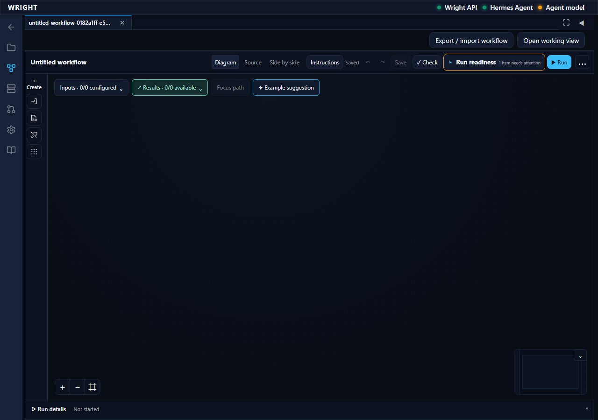
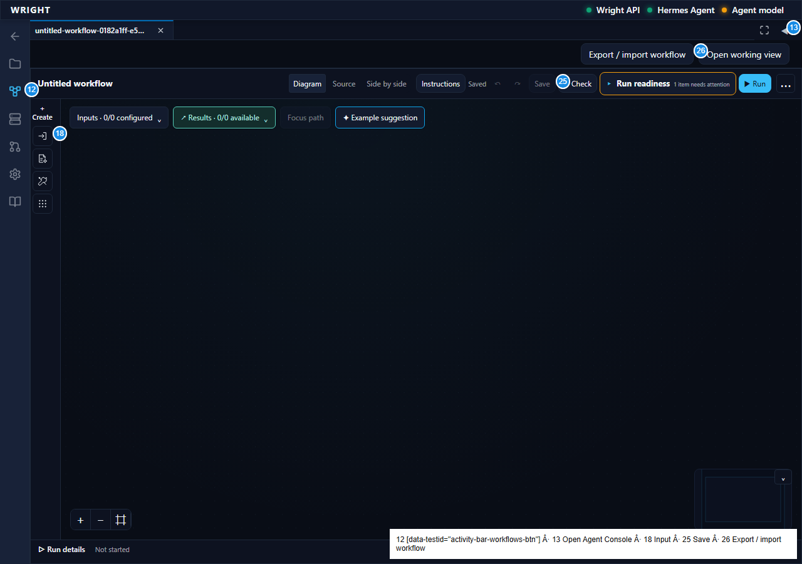
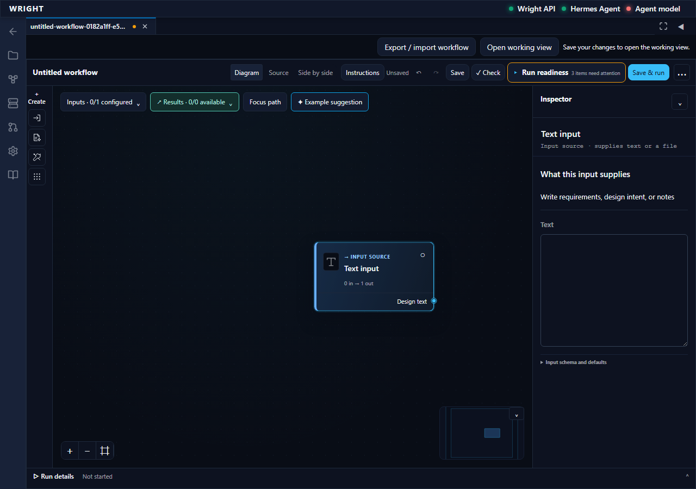
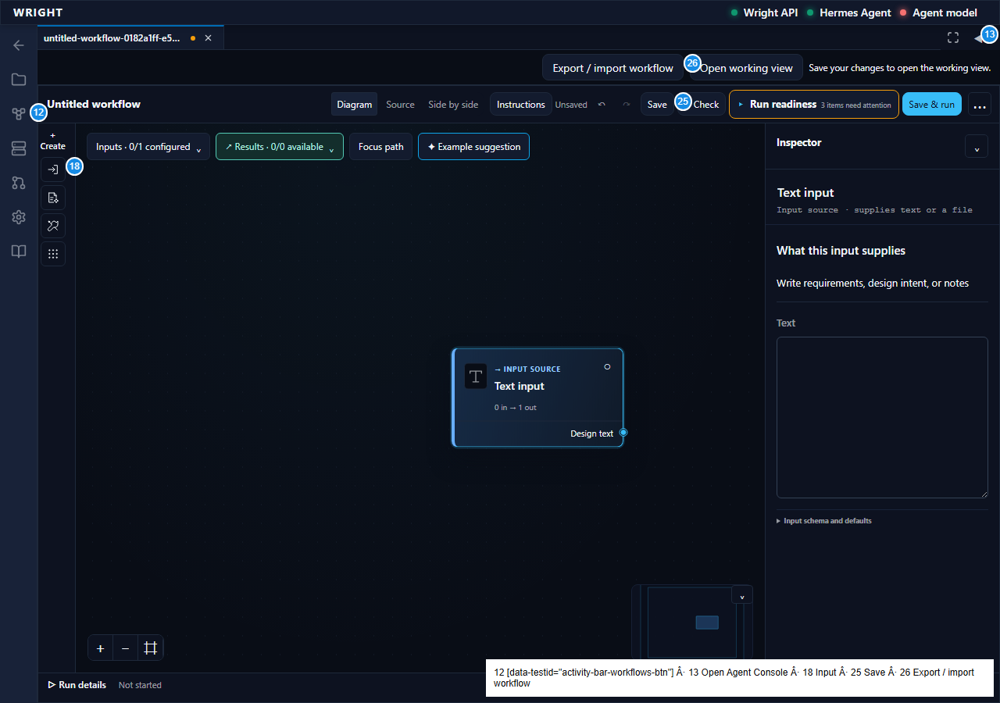
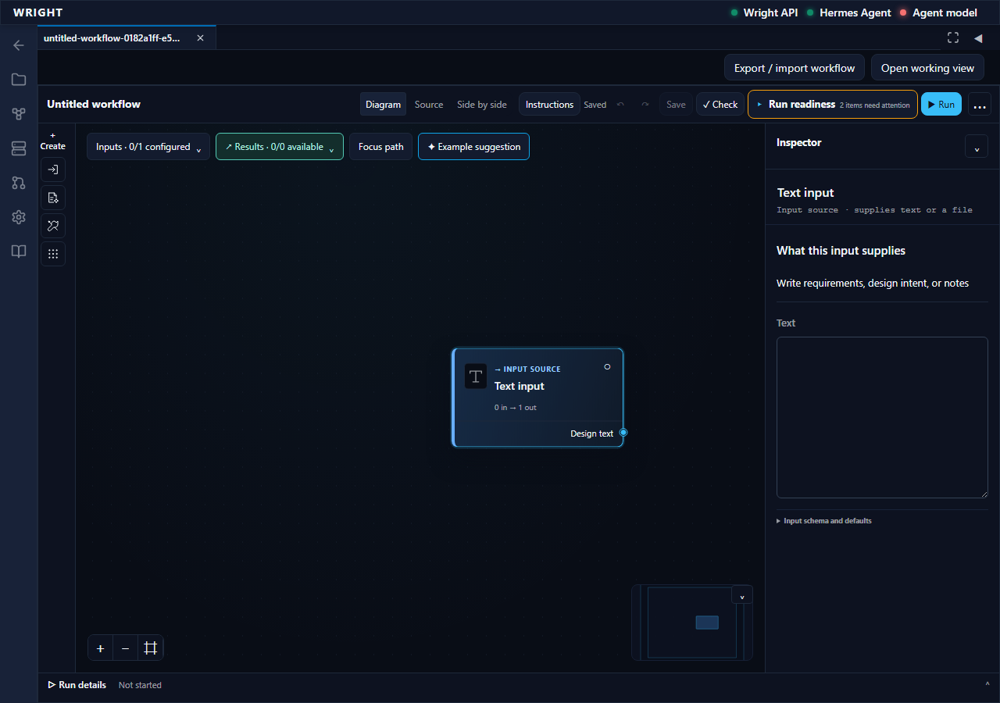
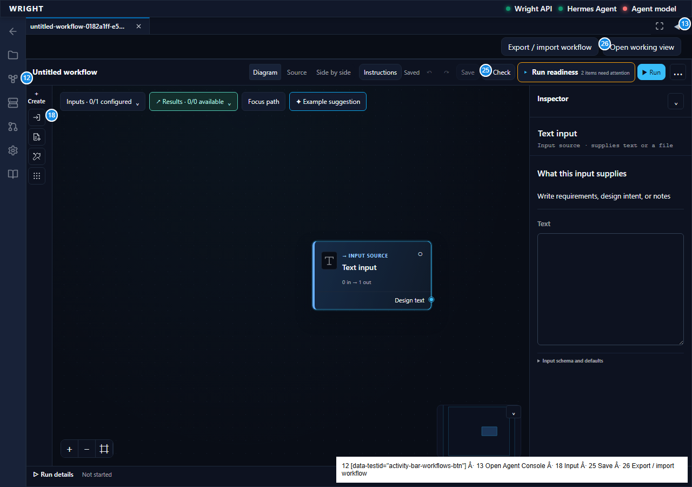
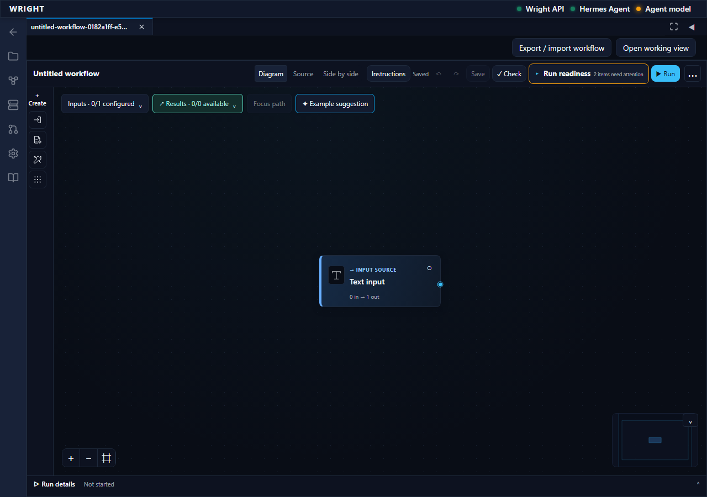
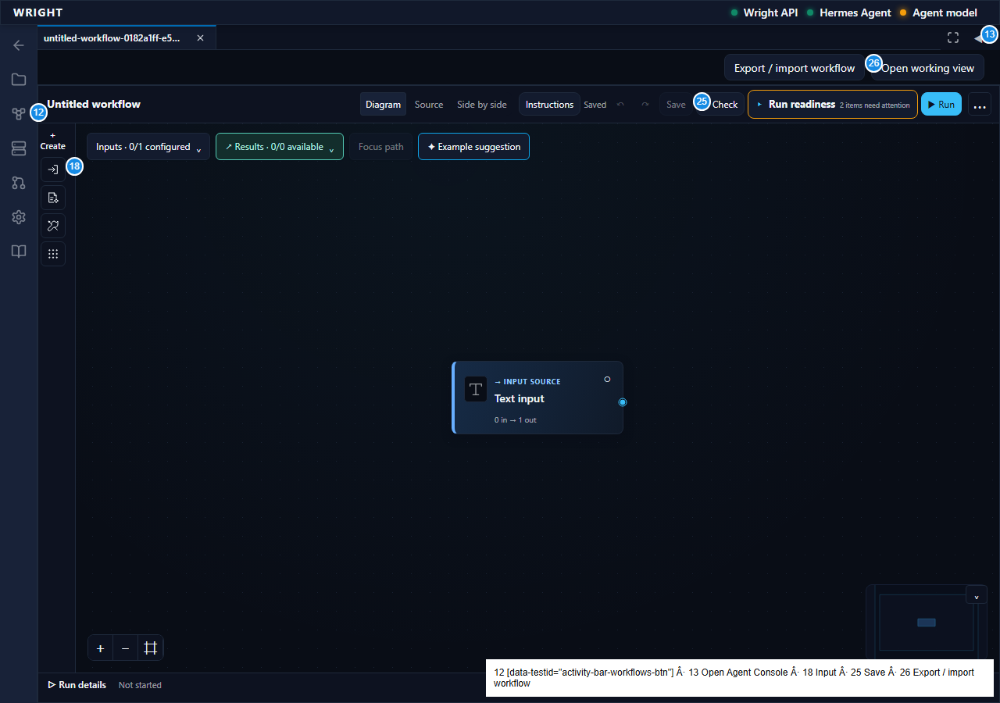
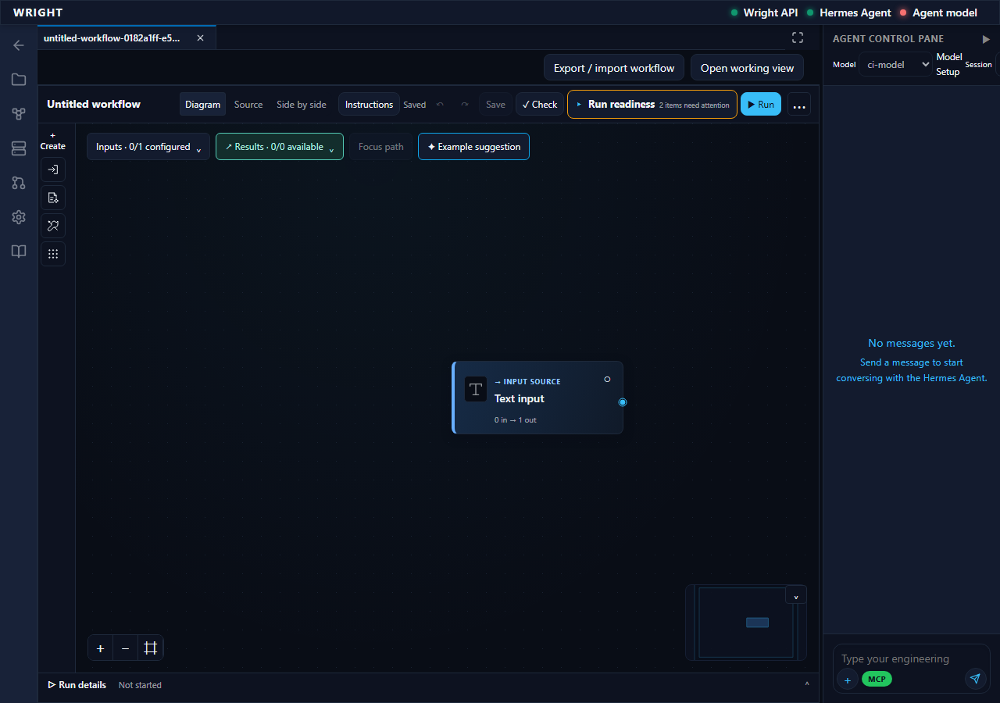
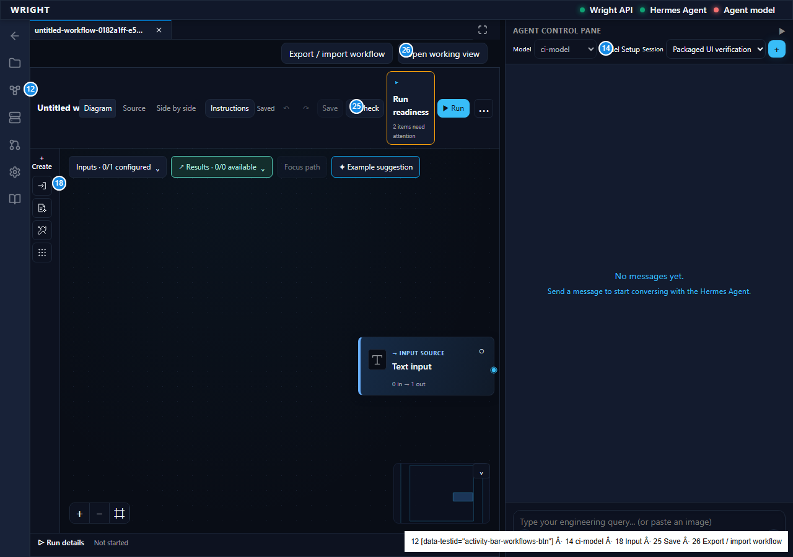

Build and reopen a workflow in the packaged Wright UI
The exact packaged Docker UI exposes the current editor through Workflows. A fresh blank process accepts an input, saves and reopens without execution. The actual configured model is displayed with its selection limitation. Model inference and engineering capabilities are outside this proof.
Manual repeat
- Open Packaged UI verification and click Workflows.
- Click Inputs, then Text input.
- Click Save.
- Refresh the workspace tab.
- Open the Agent pane if needed and inspect Model.
Open a blank workflow — pass
Purpose: The ordinary workspace control opens the current editor with no existing blocks.
Action: Open Packaged UI verification and click Workflows.
Expected: The ordinary workspace control opens the current editor with no existing blocks.
Observed: Expected state verified.


Add an input block — pass
Purpose: One editable text input appears in the flowchart and inspector.
Action: Click Inputs, then Text input.
Expected: One editable text input appears in the flowchart and inspector.
Observed: Expected state verified.


Save the draft — pass
Purpose: The workflow is saved through Wright with captured instructions; no execution is started.
Action: Click Save.
Expected: The workflow is saved through Wright with captured instructions; no execution is started.
Observed: Expected state verified.


Reopen the saved workflow — pass
Purpose: The same saved workflow and its input block are restored without running it.
Action: Refresh the workspace tab.
Expected: The same saved workflow and its input block are restored without running it.
Observed: Expected state verified.


Inspect the configured model — pass
Purpose: The observed configured model is shown; remote switching is disabled and Model Setup is explained.
Action: Open the Agent pane if needed and inspect Model.
Expected: The observed configured model is shown; remote switching is disabled and Model Setup is explained.
Observed: Expected state verified.

